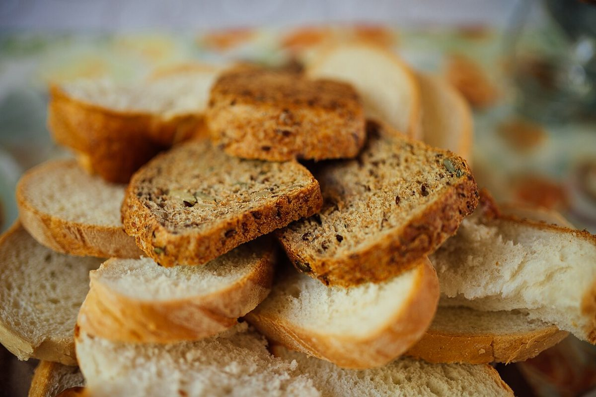
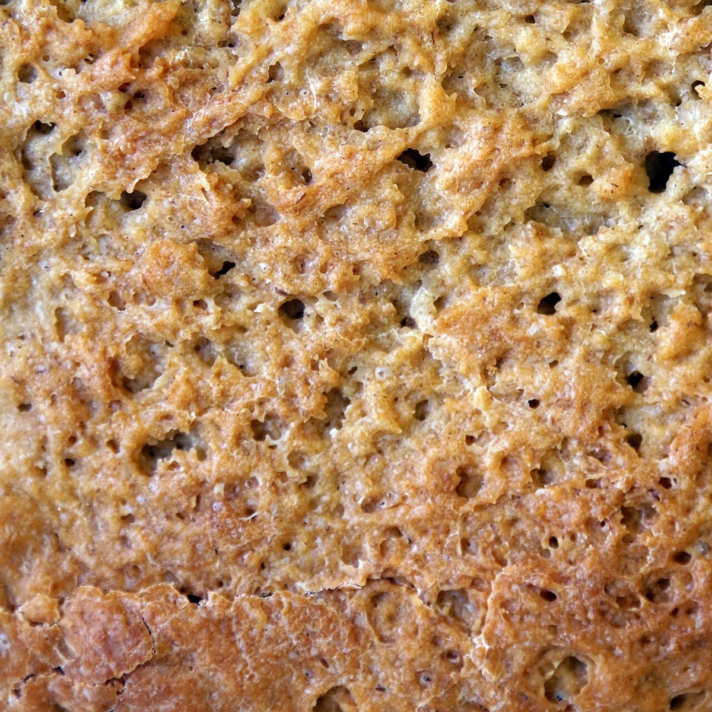

03 / メニュー
メニュー
メニューと価格は準備中です。確認でき次第、こちらに掲載します。
下の札の枠は、メニューが入る場所のイメージです。内容は何も決まっていません。
- 品名準備中価格準備中
- 品名準備中価格準備中
- 品名準備中価格準備中
- 品名準備中価格準備中
- 品名準備中価格準備中
| メニュー | 準備中 |
|---|---|
| 価格 | 準備中 |
| ご予約 | 準備中 |
下の写真はパンのイメージを伝えるためのフリー素材で、お店で提供しているものではありません。提供メニューを示すものでもありません。



